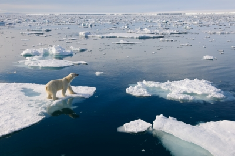
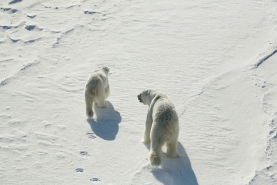
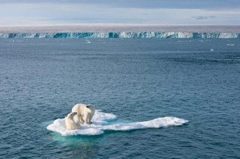

Le WWF(World Wildlife Fund)en français(fondation pour le monde de la vie sauvage) a pour la première fois créé une sorte de « rapport Ours polaire ». Ce rapport n’est pas très bon. Si nous ne diminuons pas urgemment nos émissions de gaz à effet de serre, un tiers des ours polaires disparaîtront d’ici 2050 !
Tous les deux ans, les représentants des cinq pays où vivent les ours polaires se réunissent pour parler de la protection de l’ours polaire. Ces cinq pays sont Le Canada, le Danemark, la Norvège, la Russie et les Etats-Unis. Lors de la dernière réunion, les pays ont signé un traité pour l’ours polaire : 62 actions qui devront être faites en 10 ans pour sauver l’ours polaire. Mais que remarquons-nous ? Après deux ans, seulement cinq de ces actions ont été réalisées… Mauvais point donc pour les pays de l’ours polaire !
La plus grande menace pour l’ours polaire est le réchauffement climatique. À cause des températures qui augmentent, la mer de glace sur le pôle arctique fond et l’habitat de l’ours polaire diminue… En été, l’ours polaire chasse aussi sur ces îlots de glace. Si en été, il ne se nourrit pas assez, il devient affamé en hiver…
Dans le rapport sur l’ours polaire de WWF(World Wildlife Fund), se trouve une proposition différente pour sauver l’ours polaire. Les pays de l’ours polaire doivent travailler ensemble d’une meilleure manière et créer des lois pour le Pôle Nord. Il faut penser à la chasse, au commerce et au forage pour le gaz et le pétrole.
Les pays de l’ours polaire ne peuvent pas arrêter seuls le changement climatique. Mais il est important de faire entendre leurs voix au monde entier ! Il faut clairement que les grands leaders mondiaux diminuent leurs émissions de gaz à effet de serre pour sauver l’ours polaire !